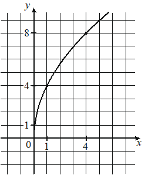

Авторский разбор и аудит предварительны; внешней экспертизы нет.
Модель автора: claude-opus-5-5 (opus; effort=low); в основных частотах: True ·
Впишите правильный ответ.
На рисунке изображён график функции вида Найдите значение

КЭС: 3.3 Степенная функция с натуральным и целым показателем. Её свойства и график. Свойства и график корня n-ой степени
20
| ID / вход | Действие | Результат | Локальные KC |
|---|---|---|---|
| s1 · condition | По графику определить точки с целыми координатами, через которые проходит график: (1; 4) и (4; 8). | Точки (1; 4) и (4; 8) принадлежат графику | kc1 |
| s2 · condition, s1 | Подставить координаты точки (1; 4) в формулу f(x)=a√x и найти коэффициент a; проверить по точке (4; 8). | a = 4; проверка: 4·√4 = 8 | kc2 |
| s3 · s2 | Вычислить значение функции f(x)=4√x при x = 25. | f(25) = 4·5 = 20 | kc3 |
[
{
"id": "m1",
"name": "Восстановление формулы по точкам графика и вычисление значения",
"step_ids": [
"s1",
"s2",
"s3"
]
}
]Вход: изображение графика на координатной сетке. Операция: выбрать точки графика, лежащие в узлах сетки, и записать их координаты. Граница: только точки, однозначно читаемые по рисунку.
{
"local_kc_id": "kc1",
"status": "match",
"catalog_kc_id": "graph_coordinates",
"evidence": [
{
"ref": "step:s1:action",
"quote": "По графику определить точки с целыми координатами, через которые проходит график: (1; 4) и (4; 8)."
},
{
"ref": "image:assets/029c63f242abeef20e62cf15.png",
"region_description": "Кривая на клетчатой сетке проходит через узлы при x=1, y=4 (подписи 1 и 4 на осях) и x=4, y=8 (подписи 4 и 8 на осях)."
}
],
"context_refs": [
"condition"
],
"alternatives_checked": [
{
"catalog_kc_id": "literal_9aee0783618d",
"reason": "Про знак производной по графику, не про координаты точек."
}
],
"rationale": "Операция — считывание координат точек графика по масштабу сетки; точки лежат в узлах, совпадающих с подписанными делениями осей. Восстановление формулы вынесено в s2, что соответствует границе определения.",
"proposal": null,
"blocking": false,
"issue_ids": []
}Вход: формула функции заданного вида с неизвестным коэффициентом и точка, принадлежащая графику. Операция: подставить координаты в формулу и решить полученное уравнение относительно параметра, при возможности проверить по другой точке.
{
"local_kc_id": "kc2",
"status": "match",
"catalog_kc_id": "literal_51a8c0abd718",
"evidence": [
{
"ref": "step:s2:action",
"quote": "Подставить координаты точки (1; 4) в формулу f(x)=a√x и найти коэффициент a"
},
{
"ref": "step:s2:result",
"quote": "a = 4"
}
],
"context_refs": [
"condition",
"step:s1:result"
],
"alternatives_checked": [
{
"catalog_kc_id": "direct_proportion",
"reason": "Определение для y=kx, а не для корневой функции."
},
{
"catalog_kc_id": "literal_3ac0ecd3cd49",
"reason": "Для показательной функции."
},
{
"catalog_kc_id": "physical_formula_substitution",
"reason": "Общая подстановка в прикладную формулу; есть точный узел для y=a√x."
}
],
"rationale": "Для y=a√x по точке (1; 4) с x>0 найдено a=4/√1=4 — полное соответствие узлу. Проверка по второй точке — дополнительная, не меняет соответствие.",
"proposal": null,
"blocking": false,
"issue_ids": []
}Вход: полностью заданная формула функции и значение аргумента из области определения. Операция: подставить аргумент и вычислить значение.
{
"local_kc_id": "kc3",
"status": "match",
"catalog_kc_id": "literal_6308771d01a6",
"evidence": [
{
"ref": "step:s3:action",
"quote": "Вычислить значение функции f(x)=4√x при x = 25."
},
{
"ref": "step:s3:result",
"quote": "f(25) = 4·5 = 20"
}
],
"context_refs": [
"step:s2:result"
],
"alternatives_checked": [
{
"catalog_kc_id": "physical_formula_substitution",
"reason": "Ориентирован на прикладные формулы и единицы; узел вычисления значения функции точнее."
}
],
"rationale": "Подстановка аргумента 25 из области определения в установленную формулу и вычисление 4·√25=20.",
"proposal": null,
"blocking": false,
"issue_ids": []
}[]
[]
{
"author_path": "data/annotation/runs/2026-11-09-fipi-team-bogdan108-next-100/raw/author/5F9519.json",
"auditor_path": "data/annotation/runs/2026-11-09-fipi-team-bogdan108-next-100/raw/auditor/5F9519.json",
"accepted_after_review": null
}